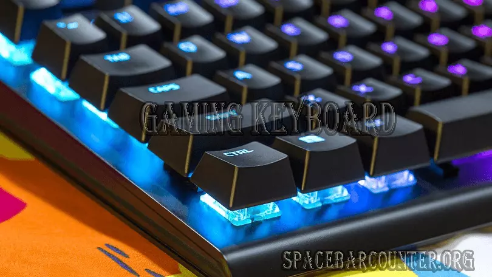

The gaming keyboard is very famous amongst gamers because of its fascinating designs. It's not just about design, and the look they are significantly made for professional or novice gamers. These keyboards are constructed to speed up the keyboard action.
This keyboard is mostly mechanical. The keys of the keyboard have less depression and result in more agile action for games. Also, the spacing between the two keys is concise leads to the quicker the key response.

A standard mechanical key has a 2-millimetre actuation point, while some keyboards are as tiny as 0.4mm. In addition to the depression distance, the processing time is a concern. In gaming keyboards, the processing time for your keyboard commands is less.
The keyboard is the layout you associate with a computer and enter your commands. It's no surprise why the different types of keyboard gamers use significantly. And this helps them to improve or prevent the performance of gamers whose every transit can mean the difference between winning and defeat.
Also, it is more frustrating when you know; you could have defeated a well-skilled opponent. Due to peripheral limitations, Such as a proper device to play games. Thus, gamers usually choose mechanical keyboards for their gaming setups. Also, suppose you want to enhance your skill, Such as Spacebar counter and mouse clicker. In that case, you must practice it with mechanical keyboards because this keyboard is very reliable and can respond quicker.
Benefits of gaming keyboard
The personal information that you are asked to provide, and the reasons why you are asked to provide it, will be made clear to you at the point we ask you to provide your personal information.
If you contact us directly, we may receive additional information about you such as your name, email address, phone number, the contents of the message and/or attachments you may send us, and any other information you may choose to provide.
When you register for an Account, we may ask for your contact information, including items such as name, company name, address, email address, and telephone number.
How we use your information
Speed:
Compared to the usual keyboard that we use for our day-to-day work, Mechanical keyboards offer the goof speed and precision. It happens because the mechanical keyboard half the time of recognizing your key pressing.
On the other hand, a usual keyboard can easily record key tapping that you didn't mean because it takes very little strength to push them down in the first place.
Feedback:
An important benefit of a standardized gaming keyboard is its excellent feedback. For keyboards, feedback means to the real response signals a keyboard provides you when you tap its keys.
Mechanical keyboards generate an audible and palpable click sound when the keys are driven halfway, right at the spot when they have recorded the user input. Consequently, you become less inclined to glitches in-game since there's no uncertainty about when you have pushed keys.
Durability:
All that competing power during games can get you to tap the keys frequently with a lot of speedy force. This can affect and even destroy a typical keyboard. Luckily, mechanical gaming keyboards are manufactured to endure this kind of use. You can rest guaranteed that the switches will last after being pushed tens of millions of times.
So if you're still using a usual keyboard, seriously think of making the shift to a mechanical one for gaming.
Is it worth getting a gaming keyboard?
Yes, it is a great idea to get one mechanical keyboard for you. This decision will help you to enhance your performance in gaming. This mechanical keyboard is much compatible in gaming than the membrane keyboard.
Normal keyboard vs Mechanical keyboard
- Gaming keyboards are specially built for gamers, whereas normal keyboards help daily work.
- Mechanical keyboards are better satisfied in a gaming situation.
- gaming keyboards use mechanical switches and dome switches in normal keyboards.
- Gaming keyboards assure you the speed compare to the normal keyboard.
- A mechanical keyboard is heavier and durable than the normal one.
- Membrane keyboards need extra care than mechanical ones.
Types of Switches used in Mechanical keyboard
There are many types of switches available with different qualities and abilities. Following is the list.
1. Linear switches:
For competitive gamers, linear switches are the perfect go-to. These keys are very light with mild compression.
2. Clicky Switches:
Clicky switches are used on the keyboard, so the clicky sound should generate as a person input with keys. These keyboards with clicky switches are less preferred in gaming.
3. Tactile Switches:
Tactile switches have a prominent impact that you can sense when pressing the key, and this acts as a significant point for when the key has been pressed. Tactile key switches are a favoured option for typing.
Can you use the mechanical keyboard for daily use?
You can use a gaming keyboard regularly, and it has the same feature that a membrane keyboard has. Although standardized switches are especially used in gaming keyboards, they are not restricted to devices.
What are the optical switches?
Optical switches use light technology to speed up answer time. The prompt reset and rejoinder time that optical switches allow them to enhance their performance and are a great option for gamers.
Distinct Sized Keyboards
Keyboards can get in all diverse shapes and sizes. Due to this, you can be confident of getting the ideal device for your requirements. The three most recommended sizes are the standard full-sized, TKL, and 60% keyboards. When you choose the keyboard with a smaller size, you will get the keyboard with fewer keys refers to the lesser feature.
Pros and Cons of gaming keyboard
Here are some pros and cons of mechanical keyboards that you should keep in mind before making any decision
Pros
- Mechanical keyboards are more long-lasting than the traditional keyboard
- They are more sensitive and give a quick response to your input.
- They are very comfortable and reliable
- They are more accurate with the input.
Cons
- They are more costly than most keyboard types
- Gaming keyboards are more concise to portable and have more mass than membrane keyboards
- It takes more time to clean
It takes more time to clean
Gaming keyboards are very important when it is all about performance. If you want to start gaming seriously and looking for a better gaming experience, a gaming keyboard has all answers.
Conclusion
Gaming keyboards and membrane keyboards usually function identically, and these keyboards are effective in both basic and gaming functionalities. However, mechanical switches give better benefits in many ways.